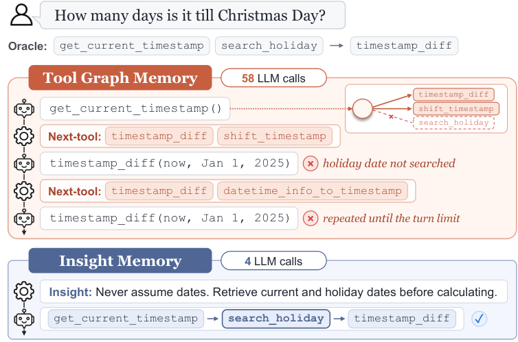

도구 그래프 메모리(tool graph memory; ToolNet, H-EPM)를 9개의 오픈 가중치 모델과 2개의 다중 턴 도구 사용 벤치마크에서 체계적으로 재검토한 결과, 메모리가 없는 에이전트 대비 유의미한 성능 향상은 드물었고, 간혹 나타나는 이득도 2.72배의 LLM 호출을 요구하며 메모리의 (대부분 틀린) 다음 도구 제안이 아니라 단순히 도구 호출 시도가 늘어난 데서 비롯됨을 보였습니다. 같은 경험을 자연어 인사이트 메모리(insight memory)로 저장하면 추가 LLM 호출이 거의 없이(1.03배) 대부분의 설정에서 가장 좋은 성능을 얻습니다.

search_holiday를 끝내 제안하지 않아 에이전트가 임의의 날짜로 timestamp_diff를 턴 제한까지 반복합니다(LLM 호출 58회). 반면 인사이트를 따르면 휴일 날짜를 먼저 조회하여 4회의 LLM 호출로 성공합니다.LLM 에이전트는 외부 도구를 여러 턴에 걸쳐 호출하며 복잡한 과제를 해결하고, 메모리는 이전 상호작용에서 얻은 경험을 보존하고 재사용할 수 있게 합니다. 대표적인 설계 중 하나가 도구 그래프 메모리입니다. 성공한 궤적(trajectory)으로부터 도구를 노드로, 도구 간 전이를 가중치가 있는 방향 간선으로 하는 그래프를 구축합니다. ToolNet은 직전에 호출한 도구의 후속 도구만 에이전트에 보여 주며 간선 가중치를 선호 점수로 사용합니다. H-EPM은 전체 도구 집합을 유지하되, 가중 전이를 절차 기억(procedural memory)으로, 간선에 붙은 문맥 요약을 일화 기억(episodic memory)으로 활용합니다. 매 단계 에이전트는 현재 상태를 요약할지 결정하고, 요약하면 그 요약과 가장 잘 맞는 저장 문맥을 가진 후속 도구 2개를, 그렇지 않으면 전이 가중치가 가장 높은 후속 도구 2개를 제안받습니다.
두 방법 모두 단계 수준의 다음 도구 제안(next-tool suggestion)을 제공합니다. 그러나 이러한 안내가 다중 턴 상호작용 전반에서 일관되게 도움이 되는지는 반복 실행, 쌍체 유의성 검정, 추가 계산 비용의 측정을 거쳐 확인된 적이 없었습니다.
핵심 질문: (1) 도구 그래프 메모리는 모델 계열, 크기, 벤치마크에 걸쳐 메모리 없는 베이스라인보다 일관되게 좋은가? (2) LLM 호출과 토큰 측면에서 추가 비용은 얼마나 드는가? (3) 이득이 존재할 때, 그것은 정말 메모리의 제안에서 비롯되는가? (4) 제안된 도구가 항상 정답이어도 남는 실패 유형은 무엇이며, 이를 해결하려면 어떤 형태의 안내가 필요한가?
답은 예상 밖이었습니다. 이득은 드물고 비싸며 대부분 에이전트가 단순히 더 많은 도구 호출을 시도한 결과였고, 정답 도구를 제안하는 오라클조차 많은 실패를 해결하지 못했습니다. 이는 메모리를 다음 도구에 대한 처방이 아니라 해당 상황에서 무엇을 해야 하는지에 대한 부드러운 사전 지식(soft prior)으로 다시 생각하도록 이끕니다.
논문은 도구 그래프 메모리에 대한 광범위한 실증 검토에서 출발하여, 동일한 경험으로부터 구축되는 경량 대안인 인사이트 메모리에 이르기까지 네 단계로 진행됩니다.
| 모델 | TS Base | TS ToolNet | TS H-EPM | TS Insight | BFCL Base | BFCL ToolNet | BFCL H-EPM | BFCL Insight |
|---|---|---|---|---|---|---|---|---|
| Qwen3.5-2B | 0.420 | 0.428 | 0.436 | 0.488+ | 0.133 | 0.044− | 0.138 | 0.165 |
| Qwen3-8B | 0.500 | 0.507 | 0.476 | 0.556+ | 0.171 | 0.129 | 0.179 | 0.242+ |
| Qwen3.6-35B-A3B | 0.626 | 0.608 | 0.670 | 0.674 | 0.181 | 0.108− | 0.156 | 0.206 |
| gemma-4-E4B-it | 0.588 | 0.547− | 0.554 | 0.620 | 0.221 | 0.094− | 0.252 | 0.285+ |
| gemma-4-26B-A4B-it | 0.690 | 0.655− | 0.705 | 0.705 | 0.566 | 0.369− | 0.519 | 0.531 |
| Ministral-3-8B | 0.631 | 0.588− | 0.672+ | 0.539− | 0.209 | 0.141− | 0.328+ | 0.306+ |
| Mistral-Small-3.2-24B | 0.545 | 0.557 | 0.603+ | 0.620+ | 0.231 | 0.127− | 0.250 | 0.338+ |
| gpt-oss-20b | 0.579 | 0.573 | 0.620 | 0.630+ | 0.325 | 0.152− | 0.369 | 0.427+ |
| gpt-oss-120b | 0.726 | 0.674− | 0.713 | 0.734 | 0.494 | 0.275− | 0.559+ | 0.454 |
TS = ToolSandbox(시나리오 207개), BFCL = BFCL-v4 다중 턴 부분집합(과제 160개). 프런티어 모델도 ToolSandbox에서 같은 양상을 보입니다: Base / ToolNet / H-EPM / Insight 순으로 GPT-4.1은 0.724 / 0.709 / 0.725 / 0.729, GPT-5.1은 0.701 / 0.694 / 0.702 / 0.702입니다.
| 지표 | Base | ToolNet | H-EPM | Insight |
|---|---|---|---|---|
| LLM 호출 수 | 5.37 | 5.15 (0.96배) | 14.62 (2.72배) | 5.54 (1.03배) |
| 토큰 수 | 8,681 | 5,937 (0.68배) | 19,225 (2.21배) | 12,404 (1.43배) |
| 조건 | Mistral-Small-3.2-24B | gpt-oss-20b | gemma-4-E4B-it |
|---|---|---|---|
| Base (LLM만) | 0.545 | 0.579 | 0.588 |
| 도구 그래프 메모리 (H-EPM) | 0.603+ (2.0) | 0.620 (1.8) | 0.554 (2.0) |
| H-EPM, 제안을 무작위 도구로 교체 | 0.571 (2.3) | 0.663+ (2.7) | 0.553 (2.0) |
| H-EPM, 제안을 정답 도구로 교체 (오라클) | 0.682+ (1.6) | 0.643+ (2.5) | 0.666+ (2.0) |
| H-EPM, 제안 제거 | 0.602+ (1.7) | 0.633+ (2.7) | 0.598 (1.9) |
| H-EPM, 요약 제거 | 0.595+ (1.8) | 0.633+ (2.6) | 0.604 (1.8) |
| Base + instruction | 0.594 (1.9) | 0.645+ (2.7) | 0.621+ (2.0) |
| 인사이트 메모리 + H-EPM | 0.600+ (2.5) | 0.585 (2.7) | 0.617 (2.8) |
| 인사이트 메모리 + instruction | 0.671+ (2.2) | 0.675+ (3.0) | 0.640 (2.7) |
도구 사용 에이전트의 메모리 연구는 다음 행동을 처방하는 구조화된 표현 쪽으로 기울어 왔습니다. 이 논문은 도구 그래프 메모리에 대해 유의성 검정을 갖춘 엄밀한 첫 검토를 제공하며, 겉보기 이득이 대체로 추가 계산의 부산물임을 보입니다. 같은 향상은 한 줄의 지시문으로도 얻을 수 있고, 그래프의 안내는 도움이 되기보다 오도하는 경우가 더 많았습니다.